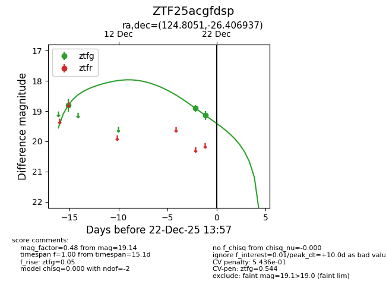
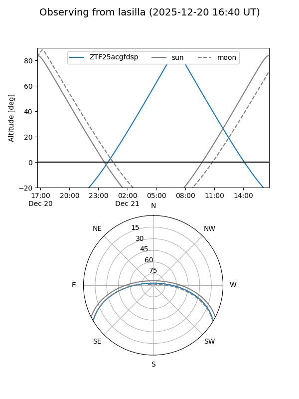
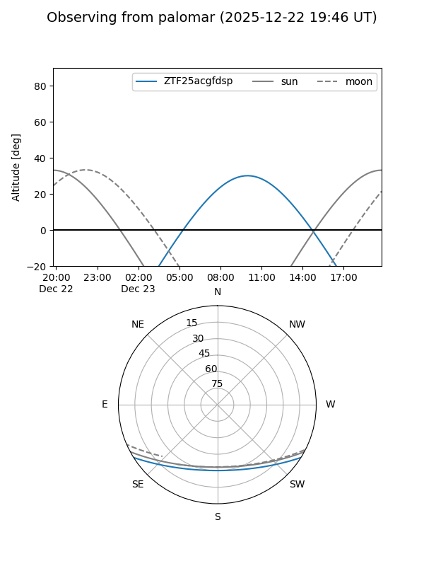
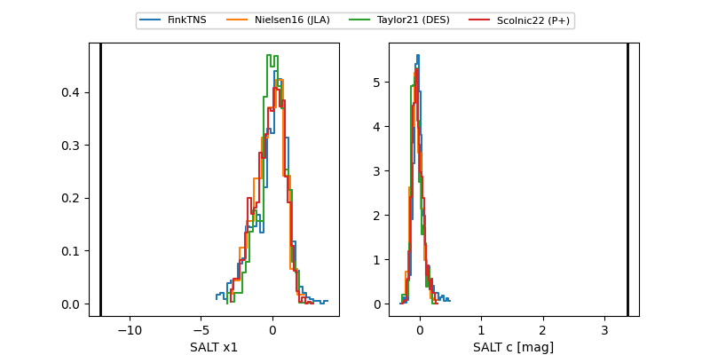

ZTF25acgfdsp
Target ZTF25acgfdsp at 2025-12-22 14:03
Aliases and brokers:
FINK: fink-portal.org/ZTF25acgfdsp
Lasair: lasair-ztf.lsst.ac.uk/objects/ZTF25acgfdsp
ALeRCE: alerce.online/object/ZTF25acgfdsp
alt names
ZTF25acgfdsp (ztf,fink_ztf)
Coordinates:
equatorial (ra, dec) = 124.8051,-26.40694
equatorial (HMS+DMS) = 08:19:13.21,-26:24:24.97
galactic (l, b) = (246.3638,+5.45766)
Flags:
likely cv
Photometry:
last ztfg=19.14
3 ztfg detections
Lightcurve

Visibility


Additional plots
